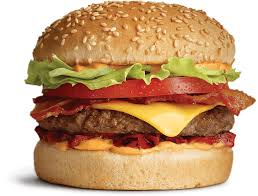
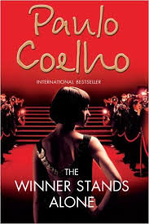
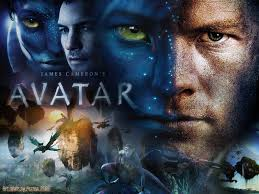

My Favourite Things
My name is Aishwarya Patra and I am a student at NIST college. This web page lists my favorite foods, favorite books, favorite movies.
My Favorite Foods
- Burgur
- Pasta
- Pizza
- Biryani
- Icecream
My Favorite Books
- The Da Vinci Code
- The Winner Stands Alone
- The Alchemist
- And There Were None
- The Shiva Trilogy
My Favorite Movies
- Mission Impossible Series
- Here the mission of Tom Cruise to uncover the mole who has framed him for the murders of his entire IMF team.
- The Conjuring
- Here the story line belongs to a real life scenario. And it is all about the supernatural things that exist in this world.
- The Sixth Sense
- The film tells the story of Cole Sear,an isolated boy who is able to see and talk to the dead, and an equally troubled child psychologist who tries to help him.
- The Avatar
- The film refers to a genetically engineered Na'vi body with the mind of a remotely located human that is used to interact with the natives of Pandora.
- The Exorcist
- The film deals with the demonic possession of a 12-year-old girl and her mother's attempts to win back her child through an exorcism conducted by two priests.


